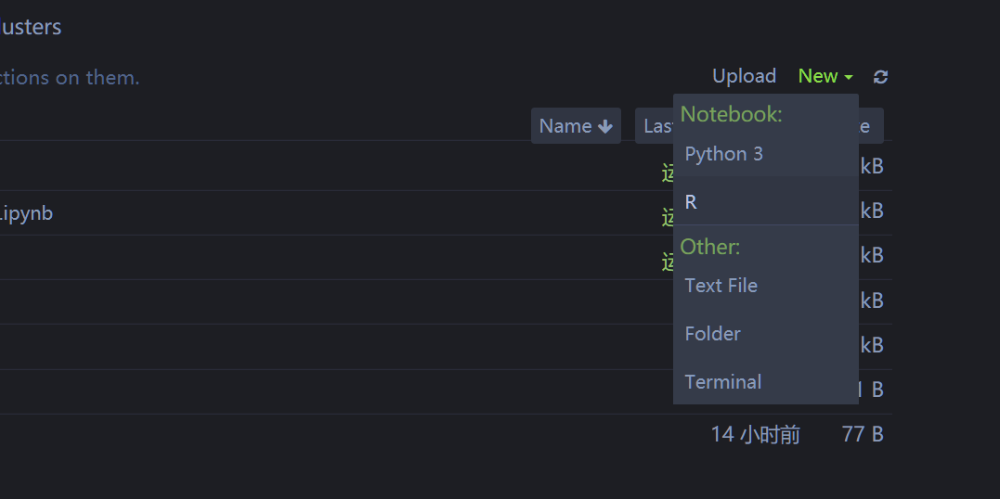

3 Jupyter notbook
3.1 修改工作路径
打开默认时C盘.在Win中可以按照下面方法修改路径.
D:
cd ...然后使用下列命令启动jupyter notebook
jupyter notebook3.2 在某个文件夹下面打开jupyter botebook
直接在某个文件夹下面,shift + right click,选择open powershell window here,然后输入jupyter notebook即可.
3.3 修改jupyter note主题
3.3.1 首先安装jupyter-themes
pip install --upgrade jupyterthemes3.3.2 查看所有可使用主题
jt -l3.3.3 更改主题
jt -t theme_name3.3.4 恢复默认主题
jt -r3.3.5 各主题样式
3.3.5.1 oceans16

3.3.5.2 onedork

3.3.5.3 chesterish

3.3.5.4 grade3

3.4 在jupyter中使用R
3.4.1 关联jupyter notebook
install.packages(c('repr', 'IRdisplay', 'evaluate', 'crayon', 'pbdZMQ', 'IRkernel', 'uuid', 'digest'))
# 只在当前用户下安装
IRkernel::installspec()
# 或者是在系统下安装
IRkernel::installspec(user = FALSE)3.4.2 打开jupyter notebook
新建,选择R.就可以使用了.

3.5 Jupyter快捷键
3.5.1 命令行模式(按Esc生效)
| Shortcut | Function |
|---|---|
M |
把代码块变成标签 |
Y |
把标签变成代码块 |
X |
剪切选择的代码块 |
A |
在上面插入代码块 |
B |
在下面插入代码块 |
Z |
撤销删除 |